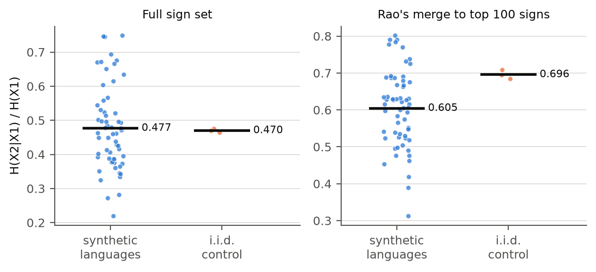
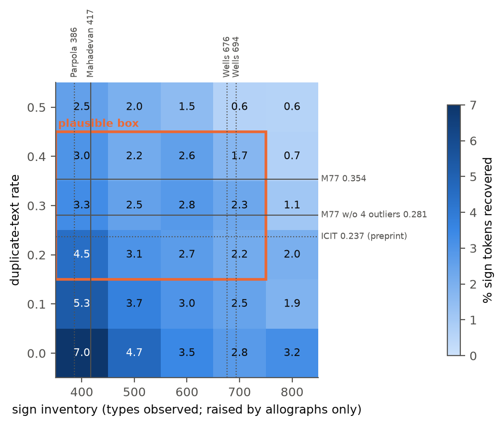

A Blind Benchmark of Decipherment Methods on Synthetic Scripts Calibrated to Indus Statistics
Arnav Goel, Woodstock School, Mussoorie, India
arnavgoel@woodstock.ac.in
Arguments about the undeciphered Indus script often rest on methods never tested on corpora of Indus size and shape with a known answer. We write five known languages and several non-linguistic sign systems in invented scripts, calibrate them to published Indus statistics (2,906 texts, 4.6 signs per text), hide the answer keys, and test eight frozen method families at three levels of solver knowledge. Four results replicate on fresh seeds. A plug-in entropy ratio cannot tell synthetic languages from an i.i.d. random control at Indus scale. Rao et al.'s smoothed estimator separates them clearly, but places most structured non-linguistic systems, both synthetic and attested, within the range of the languages. Without a related language among the candidates, mean recovery of sign values stays at or below 4.8% in every run. At equal total size, longer inscriptions help more than more inscriptions, in both text samplers and in logo-syllabic corpora. And published Indus statistics do not fix how decipherable an Indus-scale corpus is: two samplers that the published statistics cannot tell apart differ roughly three- to fivefold when a related language is available, and for logo-syllabic corpora only when it is the sole reference. A fifth, archaeological result is a prediction, not a measurement. The main solver matches the best published accuracy on English substitution ciphers. All limitations, including an optimistic synthetic relative, few source languages and post-hoc decisions, are listed.
The Indus script was used about 4,500 years ago in South Asia, and nobody can read it. Most inscriptions are four or five signs long, and no bilingual text exists. We asked whether existing computer methods would work on texts like these if the answer were known. We wrote five known languages, and some sign systems that are not language, in made-up scripts matched to the published Indus figures, then hid the answers. A simple entropy measure could not tell synthetic languages apart from an i.i.d. random control, in which every sign is drawn independently. The smoothed measure of Rao et al. (2009) could, but it placed most structured non-linguistic systems among the languages. Without a related language, the methods recovered about 5% of signs or fewer on average. Longer inscriptions helped more than more inscriptions. Two ways of building the collections that the published figures cannot tell apart gave results that differed three- to fivefold when a related language was available. This work does not decipher the Indus script or say anything about what language it records, or whether it records a language at all.
The Indus inscriptions are short. Mahadevan's (1977) concordance holds 2,906 texts with 13,372 sign occurrences, about 4.6 signs per text (Yadav et al. 2010; Rao 2018), and the longest text is commonly given as 17 signs on a single surface (Farmer, Sproat & Witzel 2004). Even the number of signs is disputed: depending on how variants are grouped, published lists count from 386 to about 700 sign types (Parpola 1994 and Wells 2015, both via Rao 2018; Mahadevan 1977; Wells 2006 via Yadav et al. 2010). No bilingual text is known, and no language of the Harappan civilisation is agreed.
Some proposals assign readings to the signs. Others use corpus statistics to argue that the signs encode language, through conditional entropy (Rao et al. 2009) or n-gram models (Yadav et al. 2010), or that they do not, from the brevity of the texts (Farmer, Sproat & Witzel 2004) and from the finding that entropy-type measures do not separate writing from non-linguistic symbol systems (Sproat 2010, 2014). Both sides rely on methods that have never been tested on a corpus of Indus size and shape whose answer is known.
We run that test. We write known languages, and sign systems that encode no language, in invented scripts, calibrate each corpus to published Indus statistics, hide its answer key, and measure what existing methods recover. The result is a statement about methods on Indus-like data. This work does not decipher the Indus script or say anything about what language it records, or whether it records a language at all. Nothing in it bears on what the signs mean.
Three scope statements apply throughout. "Decipherment" here means substitution-style recovery of sign values only, not grammar, meaning or the identity of an unknown language. And the benchmark languages (Sanskrit, Old Tamil, Sumerian, Latin, Finnish) were chosen for licences and for spread across families and script types; they imply nothing about the language of the Indus inscriptions, and how well any of them is recovered says nothing about Harappan. Finally, the benchmark tests only automated methods, and its decipherment tasks only methods that compare an unknown script with known languages. Decipherment that analyses the script itself while reconstructing the language is not measured.
Defining "Indus-like" turned out to be the hard part. Published statistics fix the number of texts, their length, the sign inventory and several frequency and positional measures. They do not fix how often texts repeat, how many sign types are variants of one another, or how text is sampled. We find that choices these statistics leave open, here the way text is sampled, change recovery roughly three- to fivefold when a related language is available, while duplicate rate and inventory within one sampler matter less under the frozen rule. So we report a map, not a single Indus number.
Findings.
The paper contributes a calibrated script generator with every target cited and flagged, eight frozen method families behind one interface, a protocol scoring four tasks separately (language-level intervals, three calibration regimes, three knowledge tiers, fresh-seed replication), a sensitivity map with published reference points, and a blind challenge with hash-committed keys.
Structural statistics. Rao et al. (2009) compared conditional entropy across Indus and reference systems and argued for linguistic structure. Yadav et al. (2010) fitted n-gram models and reported the statistics behind most of our calibration targets. Farmer, Sproat & Witzel (2004) argued from brevity and repetition that the signs were not writing, and Sproat (2010, 2014) showed that entropy-type statistics do not reliably separate writing from non-linguistic symbol systems. Lee, Jonathan & Ziman (2010) proposed an entropy-based classifier for Pictish symbols, which we include as a method.
Closest prior work. Nair (2026), a preprint, tests 1,916 deduplicated ICIT inscriptions against heraldic and administrative baseline generators and seven attested non-linguistic corpora, on four properties from the Farmer-Sproat-Witzel critique, and places the corpus between the baselines. Tiwari (2026) analyses 6,579 inscriptions with sign-form clustering, entropy, Kullback-Leibler divergence and a BiLSTM, and reports directional asymmetry and structured combinatorial patterns. Both ask what kind of sign system the real corpus is. We never touch the real corpus; we score methods against hidden keys on synthetic corpora. Nair's ICIT duplicate rate is used only as a reference point.
Computational decipherment. Knight et al. (2006) framed decipherment as unsupervised learning of a substitution model with expectation-maximisation (EM); Berg-Kirkpatrick & Klein (2013) showed that many random restarts help. Snyder, Barzilay & Knight (2010) recovered Ugaritic with Hebrew as a known relative, and Luo, Cao & Barzilay (2019) recovered Ugaritic and Linear B cognates with a neural model and minimum-cost flow. Each success had a close relative and far more text per document than the Indus corpus, which is why our knowledge tiers keep these conditions apart. Our EM cognate-matcher borrows only Luo et al.'s one-to-one assignment idea; it contains no neural network and says nothing about neural methods.
Script type and segmentation. We estimate script type from inventory size with a Chao (1984) estimate, and segment with branching entropy (Harris 1955; Tanaka-Ishii 2005).
Sign lists. Published sign lists differ mainly in how they group variants (Mahadevan 1977; Parpola 1994; Wells 2006, 2015). We have not read these works; their sign counts are taken from Yadav et al. (2010) and Rao (2018).
Archaeological context. Kenoyer & Meadow (2010) and Kenoyer (2020a, 2020b) describe how inscribed objects at Harappa differ by type and period: seals are almost all unique, tablets often occur as copies or same-mold duplicates, and the script changed over roughly 700 years. We use these statements only qualitatively (Section 4.5).
Plaintext comes from five languages in four families: Sanskrit (Rāmāyaṇa, Digital Corpus of Sanskrit, CC BY 4.0), Old Tamil (17 Sangam root texts, Project Madurai), Sumerian (CDLI bulk ATF dump, with Ur III seal inscriptions), Latin (Caesar and Vergil) and Finnish (Kalevala), the last two from Project Gutenberg. CDLI allows reuse "according to common and fair academic practice" with citation, which is not an open licence, so Sumerian material stays out of published challenge rounds. No source text is redistributed. Each source is cut into short, seal-like clauses: names, epithets, titles, formulae and, for Sumerian, real seal inscriptions.
Words are written alphabetically (phonemes), syllabically (CV, V and C units), logographically (word forms) or logo-syllabically (the 250 most frequent words as logograms, the rest spelled syllabically). Units map to random sign identifiers, with optional allographs, homophones, polyvalent signs, determinatives, word dividers and reading direction.
Each target in config/indus_targets.yaml carries its citation, tolerance, reference corpus size and
verification status (Table 1). Size-dependent statistics are computed on subsamples of the reference
size.
Table 1. Calibration targets.
| Statistic | Target | Source |
|---|---|---|
| Texts | 2,906 | Mahadevan (1977), via Yadav et al. (2010) and Rao (2018) |
| Mean length | 4.60 signs | Mahadevan (1977), via Yadav et al. (2010) and Rao (2018) |
| Longest text | commonly given as 17 signs on a single surface | Farmer, Sproat & Witzel (2004) |
| Sign inventory | 400-700 | published sign lists (Section 1) |
| Signs covering 80% of tokens | 69 | Yadav et al. (2010) |
| Share of the most frequent sign | 0.10 | Yadav et al. (2010) |
| Text-final signs covering 80% of finals | 23 | Yadav et al. (2010) |
| Text-initial signs covering 80% of initials | 82 | Yadav et al. (2010) |
| Median length | 4 | derived from Yadav et al. (2010), Fig. 2 (2,591 texts, mean 3.92, max 14; not like-for-like with 2,906 texts at 4.6 signs); originally unsourced (Appendix A) |
| Hapax share of sign types | 0.27 | Possehl (2002), read via a secondary source |
The sampler also uses the median to set the spread of text lengths.
The duplicate-text rate is not a target, because no source fixes it for the whole corpus. Two published values serve as reference points. For Mahadevan's concordance we read 0.354 from the vector data of Yadav et al. (2010, Fig. 2), or 0.281 without its four most repeated texts. For the ICIT corpus an unverified preprint gives 0.237 (Nair 2026). The Yadav et al. figure plots 2,591 texts, not 2,906, without saying which are left out. Rao et al. (2009, supplement) used a deduplicated subset of Mahadevan's concordance, without texts with ambiguous or missing signs or several lines on one side: 1,548 lines and 7,000 sign occurrences. For scale, the ICIT corpus holds about 5,692 texts on 4,705 artefacts (personal communication, 2026; unpublished). This is a reference point only; the calibration target stays Mahadevan's 2,906 texts.
full imposes every target. holdout imposes only size, length and inventory, so that no Task A
method is rewarded for frequency or positional statistics we injected. wrong_prior imposes
deliberately wrong targets. Results lead with holdout wherever calibration could be exploited.
The controls encode no language, and they are of three kinds. Statistical baselines have no meaningful structure: the i.i.d. random control and the rigid control of Rao et al. (2009), and an adversarial Markov chain tuned to the entropy ratio of the language corpora. Synthetic structured non-linguistic systems are meaningful and structured but are not language; we built them: heraldic bearings with the rule of tincture (one sign per visual element), administrative slot tags and sparse Markov emblems. Attested non-linguistic systems are Sproat's corpora of real symbol systems (Sproat 2014; Wu, Solman, Linehan & Sproat 2012), used with the author's permission as a held-out family for Tasks A and B only (Section 4.10). Rao et al. call the i.i.d. random control type 1 and the rigid one type 2; our internal keys number them the other way round, so we name them by behaviour. Japanese kamon descriptions are text and are reported separately as a contaminated control.
Tasks C (language family) and D (sign values) run at three levels of solver knowledge. related
gives one reference language, a synthetic sister of the hidden language. candidates adds every
other benchmark language. none removes the hidden language and its sister. Only candidates and
none matter for the Indus case: no close relative of the Harappan language is agreed, and we do
not know which of the two applies.
The sister is built from the half of the source text not used for the hidden corpus: a seeded 30% of consonants and of vowels are permuted by a regular, bijective correspondence, and 20% of word types are replaced by unrelated words of the same length. It is therefore much closer to the hidden language than any attested relative of an undeciphered script is likely to be, in three ways (Table 2).
Oracle sound correspondences. The solver's frozen cognate step maps sister units to the hidden language with the true table. We score before this step and report its gain only in tables.
Shared text. The original sister split clauses between the halves by position, so a repeated clause could land in both. The corrected sister splits by a hash of clause content, so no clause occurs in both halves; the fix moved no Indus-point mean outside its earlier interval. Word-for-word overlap stays high anyway, because short phrases recur throughout a text and no clause split can remove them. A real relative, with its own vocabulary, morphology and word order, would share far fewer. Every sister-tier result carries this caveat.
No structural divergence. Word order and morphology are untouched; only phonemes and a fifth of the vocabulary change. Distance is a free parameter, swept over four settings in the appendix.
Table 2. How much closer the synthetic sister is than a real relative (Indus point). Overlap is measured over 12 corpora per language (4 script types, 3 seeds).
| Property | Sampler A | Sampler B |
|---|---|---|
Gain from the oracle cognate step, related tier |
7-8 points | 17-19 points |
| Largest gain on a single corpus | up to 51 points (either sampler) | |
| Hidden texts found verbatim in the sister's half, corrected sister, range of language means | 30-53% | 43-56% |
| ... Sanskrit / Old Tamil / Sumerian / Latin / Finnish | 46 / 36 / 30 / 36 / 53% | 56 / 46 / 55 / 43 / 48% |
| ... range over single corpora | 8-90% (both samplers) | |
| Stricter sister (Section 4.6): sister clauses removed | 33% | 42% |
| Hidden-text word pairs still in the sister: corrected / stricter | 31% / 8% | 35% / 7% |
Section 4.6 repeats the key comparisons with a stricter sister that drops every clause containing any hidden text's word sequence.
Eight method families run on every corpus behind one interface: a plug-in conditional-to-unigram entropy ratio and block entropy (after Rao et al. 2009, but not their estimator; Section 4.9), a bigram Markov model (after Yadav et al. 2010), positional histograms, segmentation, script-type estimation by rule and by classifier, a two-parameter tree (Lee, Jonathan & Ziman 2010), a multi-feature language classifier, Knight-style EM, an EM cognate-matcher and a frequency-rank baseline. Method code was frozen before the final runs (Section 6); later changes touch only data generation and analysis.
EM needs a rule for choosing among reference languages. The original rule, written before the runs, selects by raw likelihood with learned emissions for a pooled rare-unit state. When it chose Sumerian for almost every corpus, we wrote a revised rule: uniform emissions for that state, and selection by bigram gain normalised by the reference's own mutual information. The original rule is primary throughout; the revised rule is post hoc.
Task A asks whether a corpus encodes language (balanced accuracy; chance 0.5), Task B its script type (accuracy; chance 0.25), Task C its language family (chance one over the number of candidate families), and Task D the value of each sign, scored as the share of sign tokens read correctly; "success" means at least 50%. Rules for Tasks A and B are learned leave-one-source-out. Means carry 95% cluster-bootstrap intervals that resample source languages (or control families) and then corpora within them, because corpora from one source are not independent. As a check that the Task D scorer is not generous, permuting a solver's predicted values across signs drops a 93% corpus to 0.9%. Positive controls against published results are in Section 4.9.
Corpora use seeds 0-2, replicated on fresh seeds 3-5, and two text samplers. Sampler B differs from A only in drawing the opening word type first; it was meant to fix a missed text-beginner target, and did not. Both meet the size and length targets in every corpus and the others at similar, not identical, rates. At the Indus point all targets are met by 13% of sampler-A and 3-7% of sampler-B language corpora (corrected-sister runs; full table in the appendix).
Duplicate-text rate and sign inventory are set exactly and varied independently on a 6 by 5 grid at the Indus point (duplicates 0-0.5, inventory 400-800). Duplicates come from assembling a corpus out of distinct texts plus popularity-weighted copies; inventory comes from the allograph rate alone, set by bisection. Because no tested method merges allographs, the inventory axis measures robustness to unmerged variants, not to a larger sign system, and every map says so. Raising inventory through allographs also disguises repeated texts as distinct ones, so the axis partly measures hidden duplication as well. A cell counts only if its corpora hit both settings without distorting text lengths.
The plausible box (duplicates 0.2-0.4, inventory 400-700) brackets the published duplicate rates and sign-list sizes. It entered the run profile after the sweep had started, after a test rendering of the first 24 records and a count of reachable cells, but before recovery was tabulated, and was first committed together with the results (Appendix A). Published values are marked on the map as reference points, not targets.
Table 3. Score labels. Every number in this section is primary unless a table row says otherwise. Intervals are 95% and resample whole source languages.
| Label | Meaning |
|---|---|
| Primary | Original (frozen) EM rule, scored before the cognate step, corrected sister language |
| With oracle sound correspondences | The same runs, scored after the cognate step |
| Upper bound | Original sister language (known overlap), scored after the cognate step; runs made before the sister split was corrected |
| Revised rule | The EM selection rule written after the original rule had run; post hoc |
The sensitivity sweep ran with both sister languages; the corrected one supplies Sections 4.4-4.5.
This result involves no reference language. At the Indus point the plug-in conditional-to-unigram entropy ratio, over the full sign alphabet, is 0.470 for an i.i.d. random control (420 signs) and 0.477 for the synthetic languages (Table 4, Figure 1). At this size the statistic cannot tell synthetic languages apart from an i.i.d. random control. After merging all but the 100 most frequent signs into one, the i.i.d. random control even scores higher. Structured non-linguistic systems are not random, and are tested separately below and in Section 4.10.
Table 4. Plug-in conditional-to-unigram entropy ratio H(X2|X1)/H(X1) at the Indus point. This is not the estimator of Rao et al. (2009).
| Statistic | i.i.d. random control | Synthetic languages |
|---|---|---|
| Full sign set, seeds 0-2 | 0.470 | 0.477 (10th-90th percentile 0.35-0.67) |
| Full sign set, fresh seeds | 0.467 | 0.476 |
| Rarer signs merged, top 100 signs | 0.696 | 0.605 |
A classifier built on the statistic reaches balanced accuracy 0.77 [0.57, 0.90] when the sampler
is calibrated to every target (full). Under holdout it falls to 0.57 [0.32, 0.81], and on fresh
seeds to 0.49 [0.25, 0.75]; both include chance. Under full, every Task A method labels at least
one structurally non-linguistic control family as language in all its corpora, the rigid control
in the entropy classifier's case. Language detection at Indus scale is unresolved, and the full
score is a product of calibration.
Rao et al.'s (2009) own estimator behaves differently. We implemented it post hoc from their supplement (Section 4.9); the frozen method is unchanged. It separates synthetic languages from the i.i.d. random control clearly: in both seed sets and both calibration regimes, every language corpus scores below every i.i.d. random-control corpus (Table 4b). But it places most structured non-linguistic systems within the range of the languages. All our synthetic structured systems fall inside it, as do four of the six attested systems from Sproat's corpora (Section 4.10) and Pictish. Totem poles sit just above the languages' range and Vinča signs well above it. Several attested systems are small (Vinča has only 804 signs), so their values are less certain.
Table 4b. Relative conditional entropy at the Indus point with Rao et al.'s estimator (modified Kneser-Ney bigrams; conditional entropy divided by that of a uniformly random sequence over the same number of signs), all signs. Post hoc. Ranges are minimum to maximum over corpora.
| Corpora | Seeds 0-2, full |
Seeds 0-2, holdout |
Seeds 3-5, full |
Seeds 3-5, holdout |
|---|---|---|---|---|
| Synthetic languages (60), mean and range | 0.53 (0.33-0.69) | 0.54 (0.28-0.72) | 0.53 (0.32-0.69) | 0.54 (0.34-0.71) |
| i.i.d. random control (3) | 0.90-0.92 | 0.92-0.94 | 0.90 | 0.92-0.93 |
| Rigid control (3) | 0.10 | 0.10-0.16 | 0.10 | 0.14-0.20 |
| Synthetic structured systems (9): heraldry, slot tags, Markov emblems | 0.59-0.64 | 0.56-0.66 | 0.59-0.64 | 0.57-0.67 |
Attested systems at native size: barn stars 0.36, weather icons 0.57, emoticons 0.58, Pictish 0.57 (disputed), kudurrus 0.72, totem poles 0.74, Vinča signs 0.85; samples of 2,906 texts give 0.59 for weather icons and 0.60 for emoticons.

Figure 1. Plug-in conditional-to-unigram entropy ratio H(X2|X1)/H(X1) at the Indus point (2,906 texts, mean 4.6 signs; full
calibration, seeds 0-2): full sign set (left) and rarer signs merged, top 100 signs
(right). Dots are corpora (60 synthetic-language corpora, 3 i.i.d. random-control corpora); bars are means.
Score label: not applicable, since Task A uses no reference language.
The hidden language and its sister are excluded here, so the sister's problems cannot reach this result. Mean recovery stays at or below 4.8% in every run, no corpus reaches 50% of tokens, and the best reaches 28% (Table 5).
Table 5. Recovery in the none tier.
| Run | Mean, original rule | Mean, revised rule | Best single corpus (original / revised) | Corpora >= 50% |
|---|---|---|---|---|
| Sampler A, seeds 0-2 | 1.8% | 3.3% | 16.4% / 18.1% | 0 of 60 |
| Sampler A, seeds 3-5 | 2.4% | 3.0% | 19.7% / 23.8% | 0 of 60 |
| Sampler B, seeds 0-2 | 3.3% | 4.8% | 23.2% / 27.6% | 0 of 60 |
| Sweep, original-sister hidden split, all valid cells | at most 4.6% per cell | at most 7.1% per cell | 24.6% / 27.9% | 0 of 1,571 |
| Sweep, corrected-sister hidden split, all valid cells | at most 4.6% per cell | at most 6.3% per cell | 26.5% (either rule) | 0 of 1,451 |
Inside the plausible box the mean is at most 4.3% (fixed-composition panel: the same 10 language-script combinations in every box cell), and it is never above 7.1% anywhere on the grid. The corrected-sister sweep gives 4.3% and 6.3%. At 20 signs per text the tier still stays at or below 6.5%.
Length beats volume. Under the frozen rule, 2,906 texts of 10 signs yield more than 6,317 texts of 4.6 signs, about 29,000 tokens each, in both samplers (Table 6, Figure 2). The advantage holds from 10 signs per text in sampler A and from 6 in sampler B, and for logo-syllabic corpora alone. Without a relative both conditions stay at or below 6.5%, with a small edge for length.
Table 6. Longer vs more inscriptions at equal total tokens, candidates tier.
| Sampler | Score | Longer | More | Difference, paired [95% CI] |
|---|---|---|---|---|
| A | Primary | 18.0% | 2.6% | 15.4 [5.8, 24.9] |
| B | Primary | 35.6% | 18.3% | 17.4 [8.5, 25.0] |
| A | Primary, fresh seeds (size interpolated on log tokens) | 17.7% | 3.4% | no interval |
| B | Primary, fresh seeds (size interpolated on log tokens) | 32.2% | 11.8% | no interval |
| A | Primary, logo-syllabic corpora only | 12.7% | 0.2% | |
| B | Primary, logo-syllabic corpora only | 27.8% | 6.4% | |
| A | With oracle sound correspondences | 28.6% | 2.7% | 25.9 [10.5, 41.4] |
| B | With oracle sound correspondences | 54.9% | 27.6% | 27.4 [12.8, 39.0] |
Figure 2. Longer vs more inscriptions at equal total tokens (about 29,000), candidates tier,
original rule, both samplers. Score label: primary. Bars are means over 60 corpora; whiskers are 95%
intervals resampling whole source languages.
Published Indus statistics do not fix how decipherable an Indus-scale corpus is. Two samplers that the published statistics cannot tell apart (neither meets every target in more than 13% of language corpora) differ roughly three- to fivefold when a related language is available. For logo-syllabic corpora, the most Indus-relevant type, this contrast appears only when the related language is the sole reference; among candidate languages it is unresolved.
Table 7. Sampler contrast, candidates tier, Indus point.
| Run | Sampler A | Sampler B | Ratio |
|---|---|---|---|
| Primary, seeds 0-2 | 2.4% [1.2, 3.8] | 12.9% [7.8, 17.4] | 5.3x |
| Primary, seeds 3-5 | 2.7% [1.2, 3.8] | 9.4% [4.7, 14.0] | 3.5x |
| Primary, stricter sister (Section 4.6) | 2.6% [1.2, 4.2] | 9.3% [5.4, 13.5] | 3.7x |
| Revised rule (post hoc), seeds 0-2 | 9.1% | 25.1% | |
| With oracle sound correspondences, seeds 0-2 | 2.8% | 18.9% | |
| Upper bound, seeds 0-2 | 2.1% | 15.0% |
No sampler-A corpus reaches 50% of tokens in either seed set; 6 of 120 sampler-B corpora do. The
logo-syllabic exception has a simple cause, given in Section 4.7. In the related tier the contrast
is smaller in ratio but larger in points: 15.9% against 30.2%.
The samplers differ only in how text windows are drawn, and both meet the size and length targets in every corpus. They also respond differently to size: from 500 to 50,000 texts, sampler A rises only from 2.5% to 3.7%. Sampler B rises from 3.5% to 18.7%.
Within one sampler, duplicate rate and inventory matter much less (Table 8, Figure 3). Across the plausible box, sampler A stays between 2.9% and 4.2% in the box panel (the 10 combinations valid in every box cell). The box does not bound recovery across samplers, though. The 37 sampler-B corpora whose measured duplicate rate and inventory fall inside it (seeds 0-5) average 11.9%, and the best reaches 72.0%.
Table 8. Sampler A across the plausible box, candidates tier.
| Quantity | Primary | Upper bound, with oracle sound correspondences |
|---|---|---|
| Range of cell means (box panel) | 2.9-4.2% | 3.5-5.1% |
| Median within-combination spread | 2.1 points | 2.1 points |
| Largest within-combination spread | 7.5 points | 7.6 points |
| Revised rule (post hoc): range of cell means | 5.6-14.2% | 8.7-21.8% |
| Revised rule: largest within-combination swing | 44 points | 62 points |

Figure 3. Sensitivity map, sampler A, candidates tier, original rule: mean % of sign tokens
recovered over all valid corpora in each cell. Score label: primary (no oracle sound
correspondences). Orange: the plausible box. Lines: published sign-list sizes (top) and duplicate
rates (right); solid lines are verified, dotted lines are read via a secondary source or come from an
unverified preprint. Inventory is raised by allographs only, and no tested method merges them. The
2.9-4.2% range in the text is the box panel; this figure shows all valid corpora. Upper-bound maps:
reports/sensitivity/appendix_sister_v1/.
No seals-only, tablets-only or single-period corpus was tested; the regions below place qualitative published statements on sampler A's map. S, seals only, is the column with no duplicates ("almost all ... unique" seals; Kenoyer & Meadow 2010). That statement is about seals as objects, not necessarily seal texts. Each seal text was repeated whenever the seal was pressed into clay, but such sealings rarely survive; the main surviving group is 93 from Lothal (Frenez & Tosi 2005, via Kenoyer & Meadow 2010, p. 7). T, tablets only, is the columns with duplicates 0.4-0.5, at or above the pooled M77 rate of 0.354, a derived lower bound. Both span inventories 400-800.
Table 9. Predicted regions, candidates tier.
| Region | Primary, all corpora | Revised rule (post hoc) | Upper bound, with oracle sound correspondences |
|---|---|---|---|
| S, seals only | 2.8-7.0% | 6.5-24.4% | 3.5-14.5% |
| T, tablets only | 0.6-3.0% | 2.5-11.7% | 0.4-4.9% |
S beats T at every inventory, under both rules. Because sealings duplicate seal texts, S is a best case for seal material: a corpus that includes surviving sealings would sit to the right of S, and the predicted seals-only advantage would shrink. The strict panel (7 combinations valid in every cell) is less clear-cut: S leads only at 400, 500 and 800 signs, most at 400 (4.3% against 0.6%), and is within 0.4 points of T at 600 and 700. Under the frozen rule the seals-only advantage is concentrated at small inventories. Without a related language every region stays at or below 6.3%; the upper bound is 7.1%. A single-period corpus would use fewer signs than the pooled 400-450 (Kenoyer 2020b, p. 249), below anything we can build, so the map cannot place it. Every subset also holds fewer than 2,906 texts.
The stricter sister drops, for each corpus, every sister clause containing any hidden text's word sequence, so verbatim containment is zero by construction (Table 2 shows how much this removes; Sumerian keeps the most hidden word pairs, 19-22%). It covers seeds 0-2, both samplers, the Indus point and the equal-token comparison: 480 corpora.
Table 10. Corrected vs stricter sister, Indus point.
| Quantity | A, corrected | A, stricter | B, corrected | B, stricter |
|---|---|---|---|---|
related tier |
15.9% | 12.4% | 30.2% | 27.3% |
candidates tier |
2.4% | 2.6% | 12.9% | 9.3% |
candidates, with oracle sound correspondences |
2.8% | 2.6% | 18.9% | 12.3% |
Original rule chose the sister (candidates) |
20% | 20% | 33% | 28% |
Both headlines survive. The sampler contrast is 2.6% [1.2, 4.2] against 9.3% [5.4, 13.5], 3.7x, with non-overlapping intervals. Longer beats more by 13.6 [5.8, 21.3] points in sampler A and 24.1 [11.9, 35.9] in sampler B. One caution: the filter strips more of the sister from many short texts (40-52% of clauses) than from fewer long ones (9-15%), which favours the long-text condition, so the stricter sister shows that the length advantage survives without measuring its size better.
The solver picked the sister about as often as before, and related-tier scores fell by about 3
points. Most of what it recovers from the sister does not come from shared exact phrases.
"It is generally agreed that the signs found on seals and pottery represent a logosyllabic (morphemic) system" (Kenoyer 2020b, p. 249). Table 11 restricts every headline to logo-syllabic corpora (15 per point).
Table 11. Headlines for logo-syllabic corpora only.
| Headline | Sampler A | Sampler B | Holds? |
|---|---|---|---|
| 4.1 Plug-in entropy ratio, top-100 merge (i.i.d. random control 0.696) | 0.591 (fresh seeds 0.587) | - | Yes: the i.i.d. random control scores higher than the languages |
| 4.2 No relative: mean, original / revised rule | 0.0% / 0.8% (fresh seeds 0.1% / 0.9%) | 0.3% / 1.1% | Yes: best single corpus 4.1%; none reaches 50% |
4.3 Longer vs more at ~29k tokens, candidates |
12.7% vs 0.2% | 27.8% vs 6.4% | Yes |
4.4 candidates, seeds 0-2 |
0.6% [0.0, 1.5] | 3.6% [0.2, 9.3] | Not resolved: intervals overlap |
4.4 candidates, seeds 3-5 |
0.9% [0.0, 2.6] | 1.6% [0.2, 3.9] | Not resolved |
4.4 candidates, stricter sister |
1.1% [0.0, 3.2] | 3.4% [0.2, 9.2] | Not resolved |
4.4 related, seeds 0-2 |
3.6% [2.4, 4.7] | 18.8% [6.6, 31.0] | Yes |
4.4 related, seeds 3-5 |
3.2% [2.0, 4.4] | 20.4% [8.3, 34.8] | Yes |
4.4 related, with oracle sound correspondences |
5.7% | 35.6% | Yes |
In the candidates tier logo-syllabic recovery is near zero for both samplers, and the reason is
mundane. The original rule picks Sumerian for almost every logo-syllabic corpus and chooses the
sister for only 3 of 15 in sampler A and 4 of 15 in sampler B, mostly when the hidden language is
Sumerian itself. The sampler contrast shows only when the sister is the sole reference.
Four of five sources are literary. As a check, we built Sumerian hidden corpora and sisters only from the 19,076 Ur III seal inscriptions in the CDLI dump (Indus point, seeds 0-2, four script types, 12 corpora per sampler) and compared them with full-source Sumerian.
Table 12. Sumerian, seal-only vs full source.
| Tier and score | A, seal only | A, full source | B, seal only | B, full source |
|---|---|---|---|---|
related |
13.1% | 5.0% | 8.8% | 13.7% |
candidates |
9.0% | 5.0% | 7.7% | 13.7% |
candidates, with oracle sound correspondences |
26.1% | 6.8% | 22.8% | 17.2% |
none, original rule |
1.5% | 2.2% | 3.6% | 2.3% |
Seal-only recovery is of the same order as full-source recovery, with no consistent direction. The no-relative tier stays low: means at most 3.6%, best corpus 20.2%. The oracle step adds more on seal-only material, 15-17 points. The check is weak: seal texts are far more repetitive and use fewer sign types (Table 13), and none meets every calibration target, since the knobs were calibrated on the full source. It is consistent with the main conclusions not depending on literary genre for Sumerian, but it is not a calibrated Indus-point result and cannot settle the question.
Table 13. Seal-only Sumerian corpora against the calibration targets.
| Statistic | Seal-only corpora | Target |
|---|---|---|
| Duplicate-text rate | 0.51-0.59 | not a target |
| Sign types | about 340 | 400-700 |
| Signs covering 80% of tokens | 37 | 69 |
EM on English letter-substitution ciphers. Knight et al. (2006, Sec. 3) decipher a 417-letter encyclopedia article under a 1:1 letter substitution, with an English letter-bigram model and known word boundaries. Their bigram EM/Viterbi baseline gets 83.7% of letters right (68 errors); their best configuration reaches 97.6%. We ran the frozen EM at benchmark settings on the same kind of task: plaintext models from Pride and Prejudice and Moby Dick at their two data sizes, ciphertext from On the Origin of Species, word boundaries given, 10 random passages and keys per length.
Table 14. Frozen EM on English letter-substitution ciphers: letters decoded correctly.
| Cipher length (letters) | 100 | 200 | 417 | 1,000 | 2,000 | 5,000 |
|---|---|---|---|---|---|---|
| Original rule, 1.5M-character model | 58.2% | 92.2% | 97.5% | 99.7% | 99.9% | 99.9% |
| Original rule, 70,000-character model | 71.7% | 84.6% | 97.4% | 99.8% | 99.9% | 99.9% |
| Revised rule, 1.5M-character model | 60.9% | 92.7% | 97.7% | 99.6% | 99.7% | 99.8% |
At the published length of 417 letters the frozen EM decodes 97.4-97.7% of letters: above the published baseline, level with the best configuration. The settings differ in detail (Viterbi over the whole text vs one value per cipher letter; novels and Darwin vs news and an encyclopedia), but the solver plainly works on the problem it was built for. Its low recovery on Indus-like corpora is not a broken implementation.
Conditional-entropy values (Rao et al. 2009). Rao et al. give these values only as a figure, which we read by eye. Their supplement describes the estimator: bigram probabilities with modified Kneser-Ney smoothing (Chen & Goodman 1998), conditional entropy in nats, and a relative value against a uniformly random sequence over the same number of tokens. We implemented it post hoc, separately from the frozen method, and applied it to the same kinds of corpus where licences allowed: the Brown corpus for English, Rig Veda 1.1-1.100 for Sanskrit, the eight Ettuthokai anthologies for Old Tamil, CDLI rather than ETCSL for Sumerian, and their two controls (10,000 lines of 20 signs over 417 signs).
Table 15. Relative conditional entropy with Rao et al.'s estimator: their Fig. 1B vs our corpora.
| Corpus | Rao et al., Fig. 1B (by eye) | Ours | Token types used (Rao's) |
|---|---|---|---|
| i.i.d. random control (their type 1) | 1.00 | 0.99 | 417 (417) |
| Sanskrit | 0.66 | 0.55 | 326 (388) |
| English words | 0.64 | 0.65 | 417 (417) |
| Sumerian | 0.57 | 0.51 | 417 (417) |
| Old Tamil | 0.56 | 0.54 | 234 (244) |
| English characters | 0.51 | 0.54 | 84 (128) |
| Rigid control (their type 2) | about 0 | 0.01 | 417 (417) |
The values reproduce within about 0.1. The extremes match, and so does the band of languages (ours 0.51-0.65, Rao's 0.51-0.66). The order among languages does not, and it is not robust to choices the supplement leaves open: without space tokens Sanskrit rises to 0.65, Sumerian cut to Rao's corpus size (about 10,300 signs) rises to 0.64, and English characters fall to 0.49 when divided by 128 possible characters rather than the 84 observed. This is a partial reproduction.
Every other control in this paper was built by us. As a held-out test, we ran the frozen Task A and B methods on the real non-linguistic symbol systems collected by Sproat (2014; Wu, Solman, Linehan & Sproat 2012), used with the author's permission. Nothing was retrained: the Task A rules were fit on the Indus-point corpora of the main run and applied unchanged. Six systems were used. The Indus bar seals in the same collection were excluded, because they are the Indus script itself. Pictish symbols are reported separately, because whether they are writing is disputed (Lee, Jonathan & Ziman 2010). Texts were extracted with Sproat's own settings. Each system was scored at its native size; weather icons and emoticons, the only two with more than 2,906 texts, were also scored on three samples of 2,906 whole texts each.
Table 16. Task A on attested non-linguistic systems: the methods that call each system language (rules fit on the main run). Every corpus here is non-linguistic, so every such call is a false positive. Plug-in conditional-to-unigram entropy ratio with rarer signs merged (top 100 signs), the statistic the entropy rule uses; for reference, 0.61 for the synthetic languages and 0.70 for the i.i.d. random control. Counts only, no intervals.
| System | Texts | Signs | Plug-in entropy ratio | Methods calling it language (of 5) |
|---|---|---|---|---|
| Vinča signs | 591 | 804 | 0.36 | 3: positional, Lee tree, multi-feature |
| Kudurru symbols | 69 | 939 | 0.62 | 2: entropy, Lee tree |
| Barn stars | 310 | 963 | 0.39 | 4: entropy, Markov, Lee tree, multi-feature |
| Totem poles | 325 | 1,798 | 0.65 | 2: entropy, positional |
| Weather icons | 10,142 | 50,710 | 0.74 | 2: Markov, Lee tree |
| Asian emoticons | 10,000 | 59,186 | 0.87 | 3: Markov, positional, Lee tree |
| Weather icons, 3 samples | 2,906 each | 0.74 | 2 in every sample: Markov, Lee tree | |
| Asian emoticons, 3 samples | 2,906 each | 0.84 | 3 in every sample: Markov, positional, Lee tree | |
| Pictish (disputed, reported separately) | 283 | 984 | 0.45 | 2: entropy, positional |
Every attested system is called language by at least two of the five methods. At native size this
mixes two things: four of the six systems have fewer than 2,000 signs, against about 13,400 at the
Indus point, so their false positives combine small-corpus effects with method failure. The
Indus-size samples avoid that problem, and there the Markov model and the Lee tree call every sample
language. The entropy rule rejects both large systems, as it rejects the i.i.d. random control,
because their ratios lie above that control's; its false positives are all small systems whose ratios
fall within the range of the synthetic languages. With rules fit on the fresh-seed run or under
holdout, one call changes (the entropy rule no longer calls barn stars language), and Pictish is
called language by one or two methods.
The script-type classifiers of Task B have no "not language" option, so they give every corpus a script type. Their outputs on these corpora are not meaningful and are not reported.
These results support the conclusion of Section 4.1 that language detection at Indus scale is unresolved. They add no new failure of the plug-in entropy ratio itself.
Public challenge rounds release corpora and keys; hidden rounds release corpora and SHA-256 commitments, with keys held by the maintainer outside the repository. Challenge corpora come from secretly disguised sister languages, so they cannot be matched against public source texts. Each team gets one scored submission per hidden round, Sumerian-derived corpora are excluded, and the static leaderboard marks entries that claim a real Indus decipherment.
Every number here can be regenerated from the repository. Method code is frozen at the git tag
frozen-v1 and the data release at data-v1; later changes touch only data generation and analysis,
selected per run profile, and each run records its sampler and sister version. Internally, samplers
A and B are generator v1 and v2, and the original, corrected and stricter sisters are
sister-v1, sister-v2 and sister-v3. Source texts are fetched by the user under their own
licences and never redistributed.
On synthetic corpora matched to the published Indus statistics, three results hold up best: a plug-in entropy ratio cannot tell synthetic languages from an i.i.d. random control, and Rao et al.'s smoothed estimator, which can, places most structured non-linguistic systems among the languages; methods without a related language recover about 5% of signs or fewer, and longer inscriptions help more than more inscriptions. Any claim about how hard the Indus script is to decipher should therefore name its corpus, the script type it assumes and whether it assumes a related language; otherwise the answer can change several times over. The most useful additions would be longer inscriptions and corpora separated by object type or period. This work does not decipher the Indus script or say anything about what language it records, or whether it records a language at all.
Every decision taken after any result was seen, in order, with the commit that records it. Decisions taken before any result are marked "pre-results". Dates are 2026, UTC.
| # | Date | Decision | Pre-results or post-results | Commit |
|---|---|---|---|---|
| 1 | 3 Oct | Design review fixes six safeguards: band and feasibility reporting, three calibration regimes, structural controls, knowledge tiers, "no method succeeds" regions reported, probe-resistant challenge | Pre-results | b1194b0 |
| 2 | 3 Oct | Calibration targets corrected from unverified initial planning values (5,500 texts, mean 4.4) to Mahadevan (1977) via Yadav et al. 2010 and Rao 2018 (2,906 texts, mean 4.60); all results regenerated. The median target (4) was kept from the initial planning values, unsourced | Post-results (development runs) | 05b91d3 |
| 3 | 3 Oct | Two EM corrections during development (pooled rare-unit state pinned; candidate selection by normalised bigram gain) produce the revised rule. The rule as first written is kept as the original rule and both are reported | Post-results (development runs) | e625f56 |
| 4 | 3 Oct | Method code frozen at frozen-v1; Sumerian excluded from published challenge rounds pending CDLI terms |
Pre-final-run | e625f56 |
| 5 | 3 Oct | Final run, 1,554 corpora | - | b1f8704 |
| 6 | 3 Oct | Length sweep added to the replication profile; fresh-seed replication (seeds 3-5) run | Post-results | bbd0e49, d997015 |
| 7 | 3 Oct | Generator v2 written to fix the missed text-beginner target (did not fix it) | Post-results | 7246062, fde7031 |
| 8 | 3 Oct | Sensitivity sweep over duplicate rate and inventory added; headline order changed to lead with generator dependence | Post-results | 4dcb9a1 |
| 9 | 3 Oct | Plausible box (duplicates 0.2-0.4, inventory 400-700) written into the profile after a test rendering of the first 24 sweep records and a reachability count on 1,216 records, before sweep recovery was tabulated. First committed together with the sweep results, so the order rests on the session log, not on git | Partly pre-results (see text) | a0e1233 |
| 10 | 3 Oct | M77 duplicate rate (0.354) measured from the vector data of Yadav et al. 2010, Fig. 2, and marked on the map as a reference point | Post-results | a0e1233 |
| 11 | 4 Oct | After reading Kenoyer & Meadow (2010) and Kenoyer (2020a, 2020b): "stray finds" and "secure context" wording removed; object-type and period notes added; archaeological subsets placed on the map as predictions | Post-results | 00f243f, 30a7ec5 |
| 12 | 4 Oct | Original vs revised rule reanalysed (no new runs). The original rule made primary throughout; "original rule stays near 5% in the box" found to hold for generator v1 only | Post-results | 8007ed7 |
| 13 | 4 Oct | Audit of the 93% corpus finds no key leak or scoring bug, but a sister clause-split defect and the size of the oracle cognate step | Post-results | 900d104 |
| 14 | 4 Oct | Sister-v2 (split by clause content) and before-cognate scoring; sister-v1 numbers relabelled "upper bound (sister-v1, known overlap)"; primary redefined as original rule before the cognate step | Post-results | 0a5c913, 87d5706 |
| 15 | 5 Oct | Sister-v3 robustness check and equal-token size points | Post-results | 1cb6faf |
| 16 | 5 Oct | Headline 3 wording changed from "roughly fivefold" to "roughly three- to fivefold" after replication (3.5x) and sister-v3 (3.7x) | Post-results | 457be13 |
| 17 | 5 Oct | Residual-overlap figure corrected from 38-82% (one script type and seed, estimated under the old split) to 30-56% (12 corpora per language, measured under sister-v2) | Post-results | 40acfba |
| 18 | 5 Oct | Median target relabelled, first as "unsourced", then as "derived from Yadav et al. 2010, Fig. 2"; it was originally taken from the initial planning values without a source | Post-results | 40acfba, this revision |
| 19 | 5 Oct | Sensitivity sweep rerun under sister-v2 with before-cognate scores | Post-results | this revision |
| 20 | 5 Oct | Logo-syllabic headline split and Sumerian seal-only genre check added | Post-results | this revision |
| 21 | 5 Oct | One configuration typo caused 60 failed jobs in an equal-token profile; fixed and rerun, failed records discarded | Operational | 1cb6faf |
| 22 | 5 Oct | Headlines reordered (length vs size becomes headline 3; underdetermination becomes headline 4) and headline 4 reworded to state the logo-syllabic result | Post-results | this revision |
| 23 | 5 Oct | Positive controls added: frozen EM on English letter-substitution ciphers, and conditional-entropy ordering against Rao et al. (2009) figures. The latter showed that our control keys number Rao's type 1 and type 2 the other way round | Post-results | this revision |
| 24 | 5 Oct | Sensitivity sweep aggregated with before-cognate scores. Seals-only and tablets-only regions defined as duplicates 0.0 and 0.4-0.5 at all inventories, for both sweeps; an earlier tablets-only range (1.4-4.9%) had used the 0.4 column only | Post-results | this revision |
| 25 | 5 Oct | Nair (2026) availability checked: on request only, no public repository or licence | - | this revision |
| 26 | 8 Oct | Sproat's attested non-linguistic corpora added, with the author's permission, as a held-out control family for Tasks A and B: frozen methods, rules fit on existing Indus-point runs, no retraining. Indus bar seals excluded; Pictish reported separately. Non-linguistic systems no longer described as random; scope sentence extended to whether the script records a language at all | Post-results | 2401ca1, this revision |
| 27 | 8 Oct | After expert comment: scope narrowed to automated methods that compare a script with known languages (Section 1, limitation 18); seals-only prediction weakened because sealings duplicate seal texts (Section 4.5); ICIT corpus size added as an unpublished reference point, not a target (Section 3.3) | Post-results | this revision |
| 28 | 8 Oct | After the authors' supplement was pointed out: Rao et al.'s (2009) estimator implemented from it (modified Kneser-Ney bigrams, relative to a uniformly random sequence over the same number of tokens) as a separate post-hoc analysis; the entropy positive control and headline 1 re-run with it (Indus point, both calibration regimes, both seed sets, Sproat's corpora). Our statistic renamed "plug-in conditional-to-unigram entropy ratio" throughout; Rao's Indus dataset added as a reference point. Methods unchanged; headline 1 reworded after review | Post-results | this revision |
| 29 | 9 Oct | Inventory-axis caveat added (Section 3.9, limitation 1): raising inventory through allographs also disguises repeated texts, so the axis partly measures hidden duplication. Found in stage-2 work on allograph merging; no v1 number changes | Post-results | this revision |
Data and code availability. Code, configurations and run records are available from the author on request.
Acknowledgements. I thank Richard Sproat for permission to use his non-linguistic symbol corpora. Code was developed with AI coding assistance.
Appendices. Analysis history (Appendix A); sweep maps and tables, primary (reports/sensitivity/) and upper bound (reports/sensitivity/appendix_sister_v1/); calibration, full result tables, sensitivity tables, the rule comparison, the audit,
the original, corrected and stricter sister comparisons, and method deviations.
Author-year style. Only sources cited in the text. "(not verified)" marks an entry, or the part of it in brackets, that we have not checked against the source itself. "(not read)" marks a work we have not read; what we use from it is taken from the secondary source named.
Berg-Kirkpatrick, T., & Klein, D. (2013). Decipherment with a million random restarts. In Proceedings of the 2013 Conference on Empirical Methods in Natural Language Processing (pp. 874-878).
Chao, A. (1984). Nonparametric estimation of the number of classes in a population. Scandinavian Journal of Statistics, 11, 265-270. (not verified)
Chen, S. F., & Goodman, J. (1998). Harvard University Computer Science Technical Report TR-10-98. (not read; cited as in Rao et al. 2009, supplement)
Farmer, S., Sproat, R., & Witzel, M. (2004). The collapse of the Indus-script thesis: The myth of a literate Harappan civilization. Electronic Journal of Vedic Studies, 11(2) [pp. 19-57, not verified].
Frenez, D., & Tosi, M. (2005). The Lothal sealings: Records from an Indus civilization town at the eastern end of the maritime trade circuits across the Arabian Sea. In M. Perna (Ed.), Studi in Onore di Enrica Fiandra. Contributi di archeologia egea e vicinorientale (pp. 65-103). Paris: Diffusion de Boccard. (not read; cited via Kenoyer & Meadow 2010)
Harris, Z. S. (1955). From phoneme to morpheme. Language, 31(2), 190-222. (not verified)
Kenoyer, J. M. (2020a). The origin and development of the Indus script: Insights from Harappa and other sites. In K. Lashari (Ed.), Studies on Indus Script (pp. 217-236). Karachi: National Fund for Mohenjodaro.
Kenoyer, J. M. (2020b). The Indus script: Origins, use and disappearance. In H. Zhao (Ed.), Dialogue of Civilisation: Comparing Multiple Centers (pp. 220-255). Shanghai: Shanghai Guji Press. [Page numbers cited are those printed in the pre-publication PDF.]
Kenoyer, J. M., & Meadow, R. H. (2010). Inscribed objects from Harappa excavations 1986-2007. In A. Parpola, B. M. Pande & P. Koskikallio (Eds.), Corpus of Indus Seals and Inscriptions, Vol. 3: New Material, Untraced Objects, and Collections outside India and Pakistan, Part 1 (Annales Academiae Scientiarum Fennicae, Humaniora 359). Helsinki: Suomalainen Tiedeakatemia. [Page numbers cited are those of the PDF read.]
Knight, K., Nair, A., Rathod, N., & Yamada, K. (2006). Unsupervised analysis for decipherment problems. In Proceedings of the COLING/ACL 2006 Main Conference Poster Sessions (pp. 499-506).
Lee, R., Jonathan, P., & Ziman, P. (2010). Pictish symbols revealed as a written language through application of Shannon entropy. Proceedings of the Royal Society A. doi:10.1098/rspa.2010.0041 [466(2121), 2545-2560, not verified].
Luo, J., Cao, Y., & Barzilay, R. (2019). Neural decipherment via minimum-cost flow: From Ugaritic to Linear B. In Proceedings of the 57th Annual Meeting of the Association for Computational Linguistics (pp. 3146-3155).
Mahadevan, I. (1977). The Indus Script: Texts, Concordance and Tables (Memoirs of the Archaeological Survey of India 77). New Delhi: Archaeological Survey of India. (not read; figures read via Yadav et al. 2010 and Rao 2018)
Nair, A. (2026). How non-linguistic is the Indus sign system? A synthetic-baseline scorecard. arXiv:2604.17828 (preprint, not peer reviewed).
Parpola, A. (1994). Deciphering the Indus Script. Cambridge: Cambridge University Press. (not read; sign count read via Rao 2018)
Possehl, G. L. (2002). The Indus Civilization: A Contemporary Perspective. Walnut Creek, CA: AltaMira. (not read; figures read via a secondary source)
Rao, R. P. N. (2018). The Indus script and economics. In Walking with the Unicorn: Social Organization and Material Culture in Ancient South Asia (pp. 518-525). Oxford: Archaeopress. arXiv:1812.00049.
Rao, R. P. N., Yadav, N., Vahia, M. N., Joglekar, H., Adhikari, R., & Mahadevan, I. (2009). Entropic evidence for linguistic structure in the Indus script. Science, 324, 1165. Supporting Online Material read from homes.cs.washington.edu/~rao/ScienceIndus.pdf.
Snyder, B., Barzilay, R., & Knight, K. (2010). A statistical model for lost language decipherment. In Proceedings of the 48th Annual Meeting of the Association for Computational Linguistics (pp. 1048-1057).
Sproat, R. (2010). Last words: Ancient symbols, computational linguistics, and the reviewing practices of the general science journals. Computational Linguistics, 36(3), 585-594. doi:10.1162/coli_a_00011
Sproat, R. (2014). A statistical comparison of written language and nonlinguistic symbol systems. Language, 90(2), 457-481.
Tanaka-Ishii, K. (2005). Entropy as an indicator of context boundaries: An experiment using a web search engine. In Proceedings of the Second International Joint Conference on Natural Language Processing (IJCNLP 2005) [pp. 93-105, not verified].
Tiwari, T. (2026). Statistical structure in Indus sign sequences. In Proceedings of the 6th International Conference on Natural Language Processing for the Digital Humanities (pp. 314-319).
Wells, B. K. (2006). Epigraphic Approaches to Indus Writing (PhD thesis). Harvard University. (not read; sign count read via Yadav et al. 2010)
Wells, B. K. (2015). The Archaeology and Epigraphy of Indus Writing. Oxford: Archaeopress. (not read; sign count read via Rao 2018)
Wu, K., Solman, J., Linehan, R., & Sproat, R. (2012). Corpora of non-linguistic symbol systems. Linguistic Society of America, Portland, OR, January 2012.
Yadav, N., Joglekar, H., Rao, R. P. N., Vahia, M. N., Adhikari, R., & Mahadevan, I. (2010). Statistical analysis of the Indus script using n-grams. PLoS ONE. arXiv:0901.3017.
Data sources. Cuneiform Digital Library Initiative (CDLI), bulk ATF data dump, August 2022, https://cdli.earth (reused under CDLI terms: academic reuse with citation). Digital Corpus of Sanskrit, O. Hellwig, https://github.com/OliverHellwig/sanskrit (CC BY 4.0). Project Madurai, https://www.projectmadurai.org. Project Gutenberg, https://www.gutenberg.org (texts 218, 229, 231, 1228, 1342, 2701, 7000). Non-linguistic symbol corpora, R. Sproat, https://richardsproat.com/data/non-linguistic-symbols (used with the author's permission).